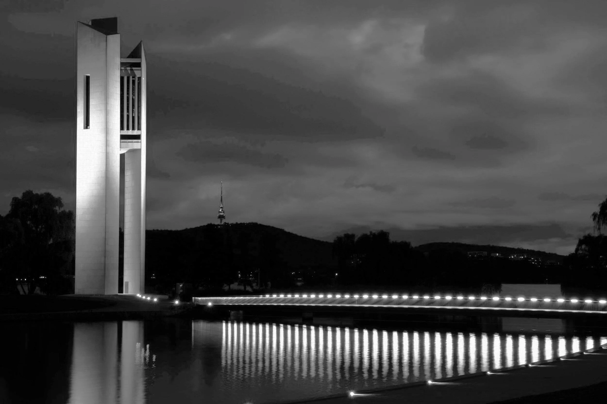
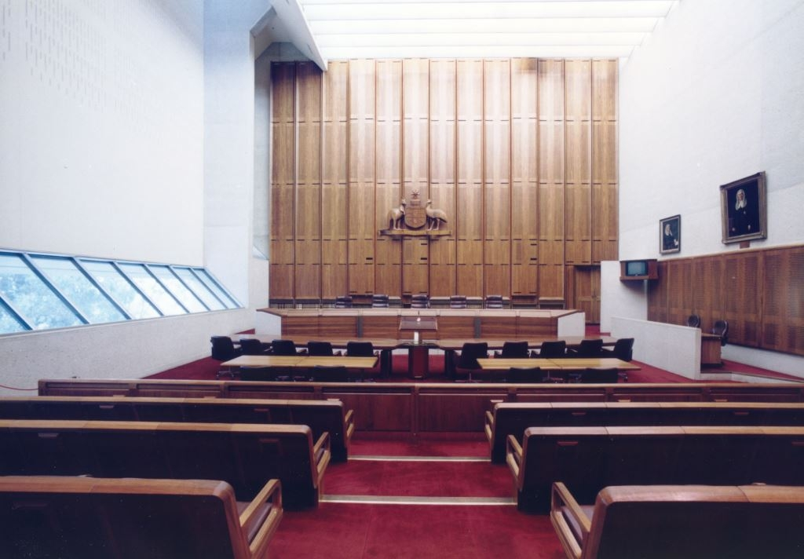
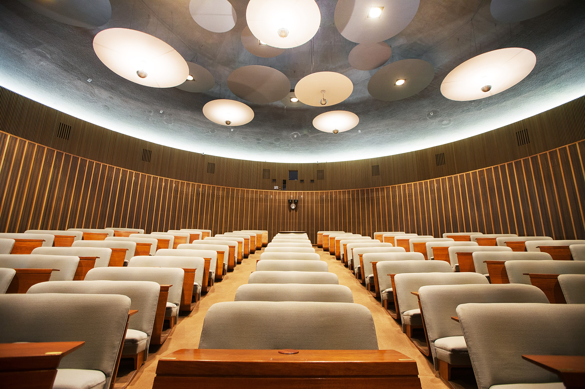

Video
Video
VIDEO · 12 MIN
The Shine Dome
An immersive journey inside Australia's Academy of Science.
Archive & Perspective
Video
VIDEO · 12 MIN
An immersive journey inside Australia's Academy of Science.

NewsNEWS · 5 MIN READ
Recent efforts to heritage list Canberra's most controversial concrete giants.

Self-guidedTOUR · 1.5 HR
Explore the public galleries and courtrooms of one of Canberra's most ambitious civic buildings.

VideoSERIES · EP 4 · 9 MIN
A tour of the Shine Dome's auditorium with the conservation architect leading its restoration.
 News
News
NEWS · 3 MIN READ
After eight years of campaigning, the John Andrews complex is moving onto the ACT register.
Featured Essay
A long essay on the under-celebrated practitioners who shaped Canberra's twentieth century, including those the National Capital Authority never officially credited.
View CollectionContribute
If you live in a modernist building, have worked on one, or have a story about one we should hear, we want to publish it. We accept oral histories, photo essays, technical notes, and the occasional polemic.
Pitch a storyRecorded conversations with residents, builders, and architects.
Image-led pieces, 8 to 20 photographs.
Short, on-the-ground reports from a single building.
Annotated plans, sketches, or measured drawings.
Event announcements, heritage news, and architectural insights delivered to your inbox.